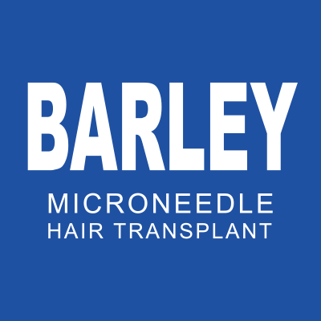
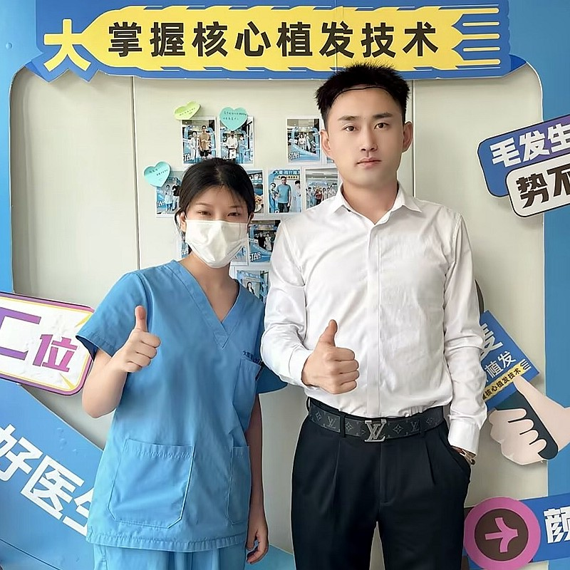
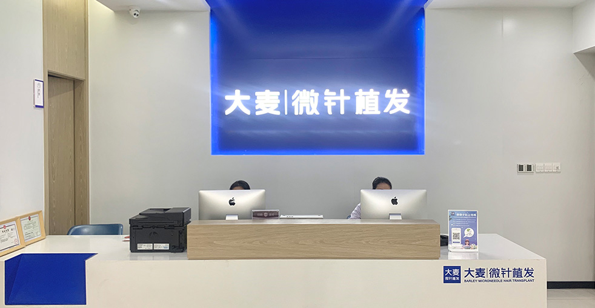

大麥微針植髮醫院 大麥植髮醫院
大麥微針植髮醫院處於高品質毛髮修復服務的最前沿。作為微針植髮和不剃髮手術的創新者，我們重新定義了行業標準。
近二十年來，我們在中國主要城市保持領先地位，開展了最多的植髮和脫髮治療手術。我們的創新技術使我們成為毛髮健康行業的先驅。
全國診所據點
創新技術專利
年專業經驗
滿意客戶
針對您獨特的脫髮需求提供全方位解決方案
個人化髮際線設計與移植，打造自然效果。
運用精密微針植入技術增加稀疏區域密度。
全面修復頭頂和髮旋部位的禿髮問題。
精準定位，打造自然美觀的眉毛。
藝術性植入，塑造完美鬍鬚造型。
修復或加強鬢角，展現男性魅力。
胸毛、陰毛等部位的體毛移植。
針對各種類型脫髮問題的全面治療方案。
專業護理與維護，保持頭髮健康。
我們革命性的微針植入筆技術使用精密工具將個別毛囊直接植入頭皮，精準度無與倫比。植入筆的360度旋轉功能確保與自然髮生長方向完美對齊，最大限度減少創傷和不適，同時保護毛囊活力。
探索我們成為中國頂級毛髮修復首選的原因
自2006年起成為微針植髮技術的領先創新者
遍佈中國各大城市，保持一貫的品質標準
先進微針和植入筆技術帶來卓越效果
深受全球客戶信賴，帶來改變人生的毛髮修復效果
為國際患者提供全程英語協助
現代化設施和嚴謹流程確保您的安全與舒適
見證患者們令人驚歎的毛髮修復之旅


與滿意患者的珍貴時刻

與團隊慶祝成功的毛髮修復

患者展示令人驚嘆的新髮際線

快樂的患者分享美好體驗

患者與醫護人員一同慶祝

植髮手術後充滿感激的患者

興奮的患者展示毛髮修復成果

患者對變身效果感到非常滿意

滿意的患者準備開始新旅程
來自全球珍貴患者的真實體驗
"朋友推薦我這家植髮診所，上網查了植髮推薦評價後果斷預約。FUE植髮費用透明合理，術後三個個月就開始長出新髮，現在髮際線超自然！"
"花了好幾個月在Google比較中國植髮費用，最後選擇大麥微針植髮醫院。FUE植髮過程精準度超高，微針技術帶來的效果超出我預期！植髮12個月後髮際線看起來完全自然，中文服務也很貼心！"
"作為一個比較過多家植髮醫院評價的人，這裡的微針植髮效果真的超出想像！手術後恢復很快，隔天就能正常洗頭，毛囊存活率也很高，非常滿意。"
"香港生活節奏快，禿頂問題困擾我多年。專門飛來做植髮，整個流程安排妥善，醫師專業細心。術後密度提升明顯，同事都說我年輕了好幾歲！"
"從吉隆坡專程來做植髮，最擔心溝通問題，但醫院有英語服務全程陪同。FUE植髮費用比馬來西亞便宜很多，效果更是頂級水準，絕對值得！"
"在新加坡諮詢過好幾家診所，最後選擇這裡因為植髮推薦評價最好。微針植髮效果自然，完全不痛，恢復期短。現在頭髮濃密，自信心完全回來了！"
我們簡化的三步流程確保您的體驗無縫、舒適，並完美契合您的毛髮修復目標。
與我們的專家聯繫，進行無壓力的脫髮狀況評估和治療方案討論。
我們將為您個人化打造最佳方案、透明價格和時間安排。
我們將負責機場或車站接送，讓您的整個旅程舒適無憂。
體驗我們現代舒適的設施

最先進的設施

在高級休息室放鬆

無菌先進設備

私密專業空間

舒適術後空間

溫暖歡迎入口
在中國各大城市尋找我們的醫院
有關中國植髮的一切資訊
點擊複製聯絡資訊
15810155700
+86 13730143529
hairtransplant@qq.com